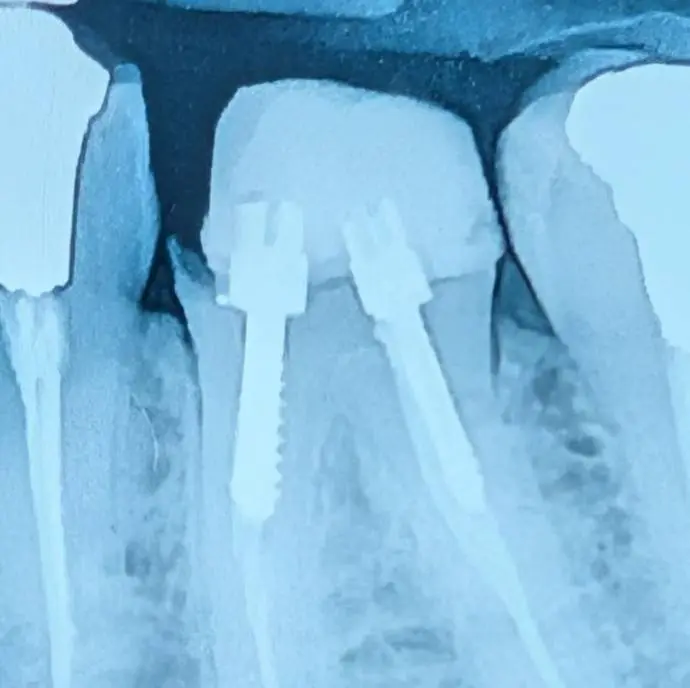

نسخه استخراجشده؛ ترجمه یا تأیید علمی انجام نشده است. وضعیت: captured
بیمار با شکایت اصلی در ناحیهای دیگر آمده است، ولی در معاینه دندان ۶ پایین چپ توجهت را جلب میکند: یک ترمیم کامپوزیت بیلدآپ بیکیفیت و بدون باند درست، همراه با عود پوسیدگی و لیکیج. بخش قابل توجهی از ساختار تاجی از بین رفته و عملاً فرولی وجود ندارد.

با توجه به موقعیت پوسیدگی، میزان از دست رفتن ساختار و محل استخوان و فورکا، افزایش طول تاج احتمالاً به درگیری فورکیشن نزدیک میشود. در این شرایط حتی اگر درمانها انجام شوند، پیامدهایی مثل گیر غذایی و مشکلات پریودنتال قابل انتظار است.
پس مسیر درمانی برای حفظ دندان هم پرهزینه است و هم پیشآگهی محتاطانه دارد. به همین دلیل کشیدن دندان و جایگزینی با ایمپلنت بهعنوان درمان منطقیتر با بیمار مطرح شد.
همینجا بیمار نکتهای غیرمنتظره میگوید: این دندان قبلاً توسط دندانپزشک دیگری تراش خورده و قرار است بهزودی روکشش تحویل داده شود.
سؤال اصلی کنار یونیت همینجا شکل میگیرد: وقتی دندانی عملاً فاقد فرول است، آیا میشود انتظار داشت یک روکش بهتنهایی پیشآگهی قابل قبولی ایجاد کند؟ آن هم نه روکش ایدهآل، بلکه روکشی که قرار است روی پوسیدگی باقیمانده گذاشته شود.
اگر چنین درمانی شکست بخورد، نبود فرول احتمالاً یکی از اولین عواملی است که در تحلیل علت شکست مطرح میشود، و قصور آن بر عهدهی درمانگری است که بدون فرول اقدام به درمان پروتزی کرده است. فرول فقط یک مفهوم بیومکانیکی نیست؛ در پروندهی شکست، یک سند است.